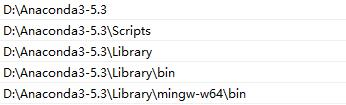

2.6 常见问题及解决方法¶
无法登录ALKEMIE软件
解决方法：请联系管理员获取License，并注册账号。
无法连接远程数据库，无法通过远程服务器交任务
解决方法：目前ALKEMIE服务器只部署在北航校内服务器和广州超算天河服务器，校外连接北航校内服务器只能通过EassyConnect 挂VPN访问。连接天河超算服务器需要通过HillStone软件挂VPN访问并且拥有天河计算账号权限，如果无法连接请联系管理员。如果要自己搭建服务器环境，该过程相对比较复杂，也请与管理员联系。
pip install 安装过程中遇到如下错误：

解决方法：请更换pip镜像至清华源，因为官方pip目前暂停支持fastTSNE软件包，详情参考2.2中第三步。
conda安装过程各种遇到如下警告：

- 解决方法：把下图所示的conda目录添加到环境变量里面即可解决
- 
运行Alkemiems-akpad无法启动ALKEMIE软件
解决方法：如果遇到这个问题，是因为conda 环境变量不正确，重新添加更新conda环境变量即可。
安装时提示缺少Visual Studio C++14
解决方法：请按照2.3安装Visual Studio 2019，重启后即可安装ALKEMIE软件。